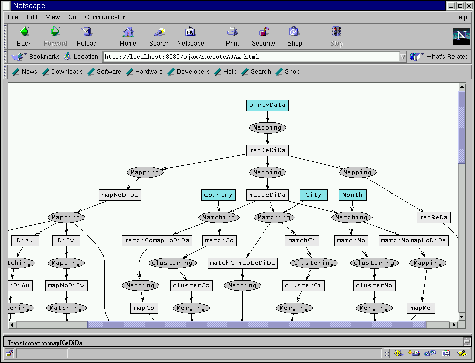

|
The graphical interface of AJAX shows the graph of transformations declaratively specified in the cleaning program in one frame (that is fixed). .
The rectangles correspond to data flows and the ellipses correspond to transformations.
Initial data flows are represented by blue rectangles. All the transformations and empty data flows (intermediate and final) are represented in grey.
For the transformations that have a single output data flow, the name of the latter is the name of the transformation (e.g. mapKeDiDa mapping transformation outputs the mapKeDiDa data flow).

|
|